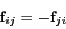
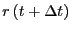

The Newtonian equations of motion can be expressed as
| (103) |
| (104) |
We first encountered interparticle forces in Sec. 3.6 in a
discussion of the virial in computing pressure in a standard
Metropolis Monte Carlo simulation of the Lennard-Jones liquid.
At this point, it suffices to consider a system with generic
pairwise interactions, for which the total potential is
given by:
|  | (109) |
| (110) |
The other key aspect of a simple MD program is a means of numerical integration of the equations of motion of each particle.
The first algorithm considered in F&S is the simple ``Verlet''
algorithm, which is an explicit integration scheme. Let us consider a
Taylor-expanded version of one coordinate of the position of a
particular particle, :
| (111) |
| (112) |
A system obeying Newtonian mechanics conserves total energy. For a
dynamical system (i.e., a system of interacting particles) obeying
Newtonian mechanics, the configurations generated by integration are
members of the microcanonical ensemble; that is, the ensemble of
configurations for which is constant, constrained to a subvolume
 in phase space. The ``natural'' ensemble for Metropolis
Monte Carlo, you will recall, is canonical; for MD, it is
microcanonical. Later, we will consider techniques for conducting MD
simulations in other ensembles (at constant temperature and/or
pressure, for example).
in phase space. The ``natural'' ensemble for Metropolis
Monte Carlo, you will recall, is canonical; for MD, it is
microcanonical. Later, we will consider techniques for conducting MD
simulations in other ensembles (at constant temperature and/or
pressure, for example).
When the Verlet algorithm is used to integrate Newtonian equations of
motion, the total energy of the system is conserved to within a finite
error, so long as  is ``small enough.'' How does one
determine a reasonable value for
is ``small enough.'' How does one
determine a reasonable value for  ? Basically the same way
we determined reasonable maximum displacements in continuous-space MC
simulation: trial and error. We will play with time-step values in
the next section, in which we consider MD simulation of the
Lennard-Jones liquid.
? Basically the same way
we determined reasonable maximum displacements in continuous-space MC
simulation: trial and error. We will play with time-step values in
the next section, in which we consider MD simulation of the
Lennard-Jones liquid.
In saying that the total energy is conserved, we realize that total
energy is the sum of potential and kinetic energy. To integrate the
equations of motion, we need to compute neither the potential or
kinetic energy, so we have to take extra steps in an MD program to
make sure total energy is being conserved. Potential energy is easily
accumulated during the calculation of forces, but kinetic energy has
to be computed using particle velocities:
| (114) |
While we are considering the instantaneous kinetic energy,
 , it is useful to recognize a working definition of
instantaneous temperature,
, it is useful to recognize a working definition of
instantaneous temperature,  :
:
| (116) |
Sec. 4.3.1 in F&S details a few other integration algorithms. Among
them is the most popular integrator, the ``Velocity Verlet''
algorithm [8]. Every MD code I have every written or
used (this totals a dozen or so) has used the velocity Verlet
algorithm, so I feel at least it is worth explaining here. The
velocity Verlet algorithm requires updates of both positions and
velocities:
|  | (117) | ||
 |
(118) |
In the next section (Sec. 4.2), we will consider the velocity Verlet algorithm in the context of an MD simulation of the Lennard-Jones fluid.
As a final tidbit, we must consider periodic boundaries applied in a molecular dynamics simulation. This is an aspect not explicitly mentioned in F&S (at least at the point where periodic boundaries are introduced). Consider modes of a system. Think of a mode as a concerted vibration of collections of particles with a characteristic wavelength. A dense system will have short wavelength (local) modes, and long wavelength modes, like large-scale concerted ``sloshing'' of the particles in the system. These modes exist naturally in matter, and the partitioning of energy among these various modes is important to understand in describing some transport properties. The key caveat is that modes with wavelengths longer than a box size are excluded in systems with periodic boundaries because they cancel themselves.